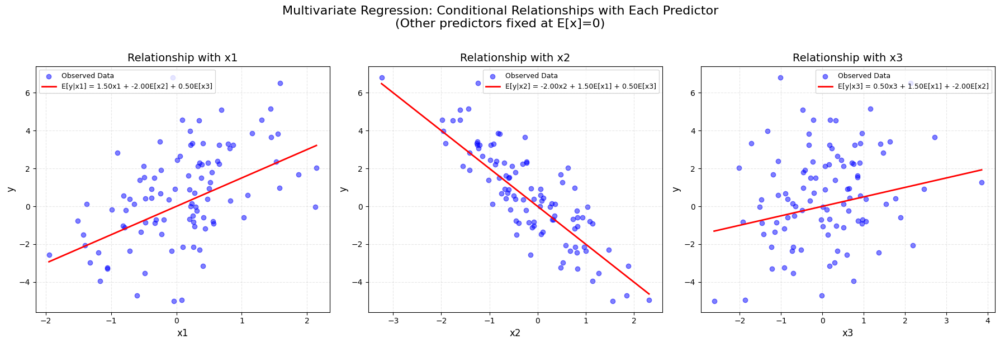
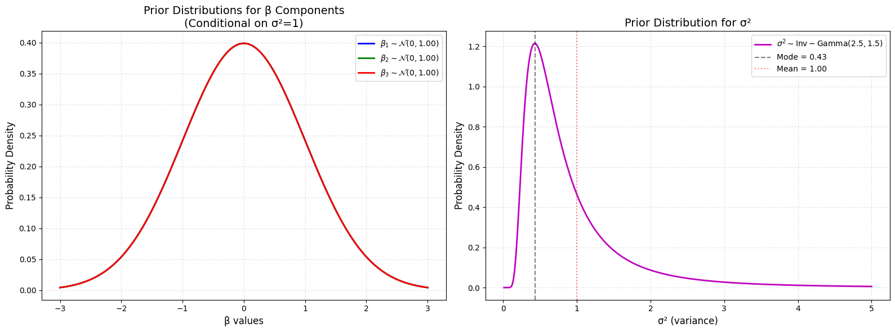
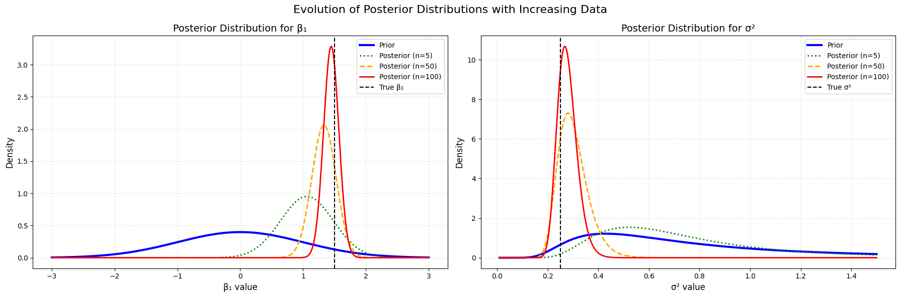
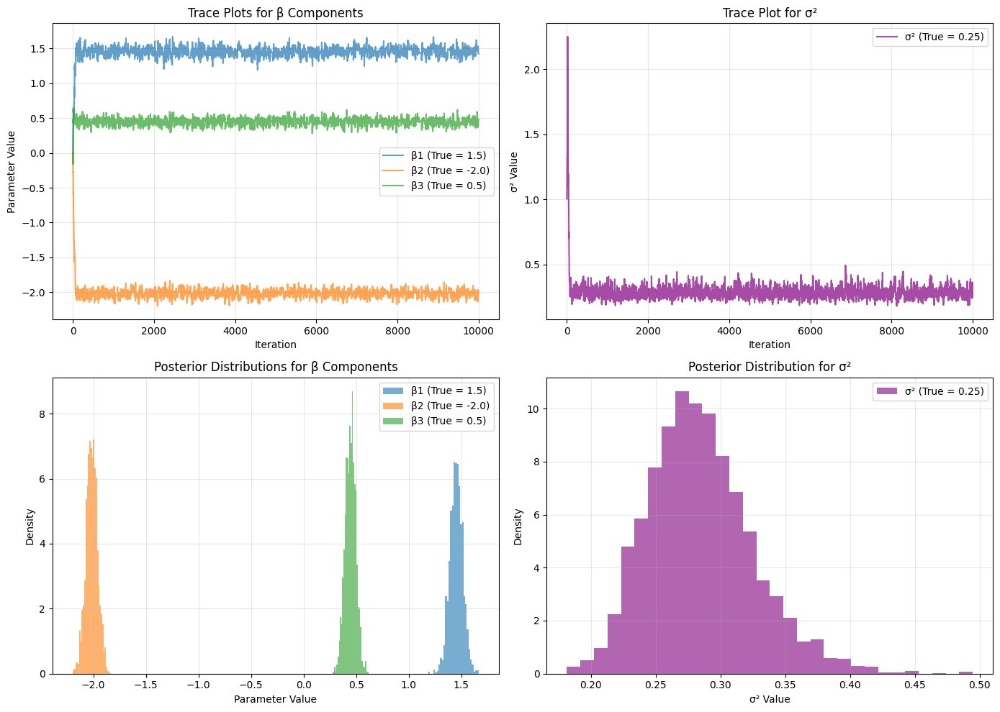

import numpy as np
import matplotlib.pyplot as plt
from scipy.stats import multivariate_normal, invgamma, normMultivariate Regression
Packages
np.random.seed(42)Model Specification
Assume we are considering the following model:
\[ \mathbf{Y} = \mathbf{X}\boldsymbol{\beta} + \boldsymbol{\epsilon} \]
Where:
- \(\mathbf{Y}\) is the \(N \times 1\) response vector
- \(\mathbf{X}\) is the \(N \times P\) design matrix (each row represents one observation)
- \(\boldsymbol{\beta}\) is the \(P \times 1\) vector of regression coefficients
- \(\boldsymbol{\epsilon}\) is the \(N \times 1\) vector of errors
The error term is distributed as:
\[ \boldsymbol{\epsilon} \sim \mathcal{N}(\mathbf{0}, \sigma^2\mathbf{I}_N) \]
Where:
- \(\mathbf{0}\) is an \(N \times 1\) vector of zeros
- \(\mathbf{I}_N\) is the \(N \times N\) identity matrix
- \(\sigma^2\) is the common variance parameter
Visualise Simulated Data
# parameter values
N = 100 # n observations
P = 3 # n of predictors
true_beta = np.array([1.5, -2.0, 0.5]) # true coefficients
true_sigma = 0.5
true_sigma_sq = true_sigma**2
# generate simulated data
X = np.random.randn(N, P) # design matrix with N observations and P predictors
epsilon = np.random.randn(N) * true_sigma # errors
y = X @ true_beta + epsilon # response variable# Create a figure with 3 subplots (one for each predictor)
fig, axes = plt.subplots(1, 3, figsize=(18, 6))
# Loop through each predictor
for i in range(P):
ax = axes[i]
# Plot raw data points for this predictor
ax.scatter(X[:, i], y, alpha=0.5, label='Observed Data', color='blue')
# Create prediction matrix where we vary only the current predictor
x_line = np.linspace(min(X[:, i]), max(X[:, i]), 100)
X_line = np.zeros((100, P))
X_line[:, i] = x_line # vary only the i-th predictor
# Calculate conditional expectation (other predictors set to 0)
y_line = X_line @ true_beta
# Plot true conditional relationship
ax.plot(x_line, y_line, 'r-', linewidth=2,
label=f'E[y|x{i+1}] = {true_beta[i]:.2f}x{i+1} + ' +
' + '.join([f'{true_beta[j]:.2f}E[x{j+1}]' for j in range(P) if j != i]))
# Customize subplot
ax.set_title(f'Relationship with x{i+1}', fontsize=14)
ax.set_xlabel(f'x{i+1}', fontsize=12)
ax.set_ylabel('y', fontsize=12)
ax.grid(True, linestyle='--', alpha=0.3)
ax.legend(fontsize=9, loc='upper left' if i == 0 else 'best')
plt.suptitle('Multivariate Regression: Conditional Relationships with Each Predictor\n(Other predictors fixed at E[x]=0)',
fontsize=16, y=1.02)
plt.tight_layout()
plt.show()
Conditional Distribution
For each observation \(i\):
\[ y_i | \boldsymbol{\beta}, \sigma^2 \sim \mathcal{N}(\mathbf{x}_i\boldsymbol{\beta}, \sigma^2) \]
Where:
- \(y_i\) is the scalar response for observation \(i\)
- \(\mathbf{x}_i\) is the \(1 \times P\) row vector of predictors for observation \(i\)
- \(\boldsymbol{\beta}\) is the \(P \times 1\) column vector of coefficients
- \(\sigma^2\) is the scalar variance parameter
Given \(\mathbf{X}\), \(\boldsymbol{\beta}\), and \(\sigma^2\), the likelihood of \(\mathbf{Y}\) is:
\[ p(\mathbf{Y} | \mathbf{X}, \boldsymbol{\beta}, \sigma^2) = (2\pi\sigma^2)^{-N/2} \exp\left(-\frac{1}{2\sigma^2}(\mathbf{Y} - \mathbf{X}\boldsymbol{\beta})^\top(\mathbf{Y} - \mathbf{X}\boldsymbol{\beta})\right) \]
Prior Distributions
We assume the following prior for \(\boldsymbol{\beta}\) given \(\sigma^2\) (multivariate normal):
\[ p(\boldsymbol{\beta} | \sigma^2) = (2\pi\sigma^2)^{-P/2} |\mathbf{A}_0|^{1/2} \exp\left(-\frac{1}{2\sigma^2}(\boldsymbol{\beta} - \boldsymbol{\mu}_0)^\top \mathbf{A}_0 (\boldsymbol{\beta} - \boldsymbol{\mu}_0)\right) \]
Parameters:
- \(\boldsymbol{\mu}_0\): \(P \times 1\) prior mean vector
- \(\mathbf{A}_0\): \(P \times P\) prior precision matrix
- \(\sigma^2\): Scales the covariance matrix (\(\sigma^2 \mathbf{A}_0^{-1}\))
We assume the following prior for \(\sigma^2\) (Inverse Gamma):
\[ p(\sigma^2) = \frac{b_0^{a_0}}{\Gamma(a_0)} (\sigma^2)^{-(a_0 + 1)} \exp\left(-\frac{b_0}{\sigma^2}\right) \]
Parameters:
- \(a_0 > 0\): Shape parameter
- \(b_0 > 0\): Scale parameter
# Prior parameters (multivariate normal for beta)
P = 3 # number of predictors
mu_0 = np.zeros(P) # prior mean vector
A_0 = np.eye(P) # prior precision matrix (identity)
# Prior parameters (inverse gamma for sigma^2)
a_0 = 2.5 # shape parameter
b_0 = 1.5 # scale parameter# Create figure with two subplots
fig, (ax1, ax2) = plt.subplots(1, 2, figsize=(16, 6))
# =============================================
# Plot 1: Prior for beta (multivariate normal)
# =============================================
# We'll show marginal distributions for each beta_p
beta_grid = np.linspace(-3, 3, 500)
colors = ['blue', 'green', 'red']
for p in range(P):
# Marginal distribution for beta_p ~ N(mu_0[p], sigma^2 * (A_0^{-1}[p,p]))
# Here we assume sigma^2 = 1 for visualization (since it's conditional)
marginal_std = np.sqrt(np.linalg.inv(A_0)[p,p]) # sqrt of diagonal element
prior_density = norm.pdf(beta_grid, loc=mu_0[p], scale=marginal_std)
ax1.plot(beta_grid, prior_density, '-', linewidth=2, color=colors[p],
label=rf'$\beta_{p+1} \sim \mathcal{{N}}(0, {marginal_std**2:.2f})$')
# Customize beta prior plot
ax1.set_title('Prior Distributions for β Components\n(Conditional on σ²=1)', fontsize=14)
ax1.set_xlabel('β values', fontsize=12)
ax1.set_ylabel('Probability Density', fontsize=12)
ax1.legend(fontsize=10)
ax1.grid(True, linestyle='--', alpha=0.3)
# =============================================
# Plot 2: Prior for sigma^2 (inverse gamma)
# =============================================
# Create grid of sigma^2 values
sigma_sq_grid = np.linspace(0.01, 5, 500)
prior_sigma_sq = invgamma.pdf(sigma_sq_grid, a=a_0, scale=b_0)
ax2.plot(sigma_sq_grid, prior_sigma_sq, 'm-', linewidth=2,
label=rf'$\sigma^2 \sim \mathrm{{Inv-Gamma}}({a_0}, {b_0})$')
# Highlight mode (a_0 > 1) and mean
if a_0 > 1:
mode = b_0 / (a_0 + 1)
ax2.axvline(mode, color='k', linestyle='--', alpha=0.5,
label=f'Mode = {mode:.2f}')
mean = b_0 / (a_0 - 1) if a_0 > 1 else np.inf
ax2.axvline(mean, color='r', linestyle=':', alpha=0.5,
label=f'Mean = {mean:.2f}' if np.isfinite(mean) else 'Mean = ∞')
# Customize sigma^2 prior plot
ax2.set_title('Prior Distribution for σ²', fontsize=14)
ax2.set_xlabel('σ² (variance)', fontsize=12)
ax2.set_ylabel('Probability Density', fontsize=12)
ax2.legend(fontsize=10)
ax2.grid(True, linestyle='--', alpha=0.3)
plt.tight_layout()
plt.show()
Joint Posterior Distribution
The joint posterior distribution is proportional to:
\[ p(\boldsymbol{\beta}, \sigma^2 | \mathbf{Y}, \mathbf{X}) \propto p(\mathbf{Y} | \mathbf{X}, \boldsymbol{\beta}, \sigma^2) \cdot p(\boldsymbol{\beta} | \sigma^2) \cdot p(\sigma^2) \]
It can be shown that the conditional posterior for \(\boldsymbol{\beta}\) is:
\[ \boldsymbol{\beta} | \sigma^2, \mathbf{Y}, \mathbf{X} \sim \mathcal{N}(\boldsymbol{\mu}_N, \sigma^2 \mathbf{A}_N^{-1}) \]
Where the posterior parameters are: \[ \begin{aligned} \mathbf{A}_N &= \mathbf{X}^\top\mathbf{X} + \mathbf{A}_0 \\ \boldsymbol{\mu}_N &= \mathbf{A}_N^{-1}(\mathbf{X}^\top\mathbf{Y} + \mathbf{A}_0\boldsymbol{\mu}_0) \end{aligned} \]
Likewise it can be shown that the marginal posterior for \(\sigma^2\) is:
\[ \sigma^2 | \mathbf{Y}, \mathbf{X} \sim \text{Inv-Gamma}(a_N, b_N) \]
Where the posterior parameters are: \[ \begin{aligned} a_N &= a_0 + \frac{N}{2} \\ b_N &= b_0 + \frac{1}{2}\left(\mathbf{Y}^\top\mathbf{Y} + \boldsymbol{\mu}_0^\top\mathbf{A}_0\boldsymbol{\mu}_0 - \boldsymbol{\mu}_N^\top\mathbf{A}_N\boldsymbol{\mu}_N\right) \end{aligned} \]
# Observation subsets to plot
observation_subsets = [5, 50, N]
colors = ['green', 'orange', 'red']
line_styles = [':', '--', '-']
# Create figure with two subplots
fig, (ax1, ax2) = plt.subplots(1, 2, figsize=(18, 6))
# =============================================
# Plot 1: Posterior for β components
# =============================================
beta_grid = np.linspace(-3, 3, 500)
# Plot prior (marginal for first β component)
prior_std = np.sqrt(np.linalg.inv(A_0)[0,0])
ax1.plot(beta_grid, norm.pdf(beta_grid, mu_0[0], prior_std),
'b-', linewidth=3, label='Prior')
for n_obs, color, ls in zip(observation_subsets, colors, line_styles):
X_sub = X[:n_obs]
y_sub = y[:n_obs]
# Calculate posterior parameters for β
A_n = X_sub.T @ X_sub + A_0
mu_n = np.linalg.solve(A_n, X_sub.T @ y_sub + A_0 @ mu_0)
# For visualization, we'll show marginal for β1
post_var = np.linalg.inv(A_n)[0,0] # Assuming σ²=1 for visualization
post_std = np.sqrt(post_var)
ax1.plot(beta_grid, norm.pdf(beta_grid, mu_n[0], post_std),
color=color, linestyle=ls, linewidth=2,
label=f'Posterior (n={n_obs})')
ax1.axvline(true_beta[0], color='k', linestyle='--', label='True β₁')
ax1.set_title('Posterior Distribution for β₁', fontsize=14)
ax1.set_xlabel('β₁ value', fontsize=12)
ax1.set_ylabel('Density', fontsize=12)
ax1.legend(fontsize=10)
ax1.grid(True, linestyle='--', alpha=0.3)
# =============================================
# Plot 2: Posterior for σ²
# =============================================
sigma_sq_grid = np.linspace(0.01, 1.5, 500)
# Plot prior
ax2.plot(sigma_sq_grid, invgamma.pdf(sigma_sq_grid, a=a_0, scale=b_0),
'b-', linewidth=3, label='Prior')
for n_obs, color, ls in zip(observation_subsets, colors, line_styles):
X_sub = X[:n_obs]
y_sub = y[:n_obs]
# Calculate posterior parameters for σ²
A_n = X_sub.T @ X_sub + A_0
mu_n = np.linalg.solve(A_n, X_sub.T @ y_sub + A_0 @ mu_0)
a_n = a_0 + n_obs/2
b_n = b_0 + 0.5*(y_sub.T @ y_sub + mu_0.T @ A_0 @ mu_0 - mu_n.T @ A_n @ mu_n)
ax2.plot(sigma_sq_grid, invgamma.pdf(sigma_sq_grid, a=a_n, scale=b_n),
color=color, linestyle=ls, linewidth=2,
label=f'Posterior (n={n_obs})')
ax2.axvline(true_sigma_sq, color='k', linestyle='--', label='True σ²')
ax2.set_title('Posterior Distribution for σ²', fontsize=14)
ax2.set_xlabel('σ² value', fontsize=12)
ax2.set_ylabel('Density', fontsize=12)
ax2.legend(fontsize=10)
ax2.grid(True, linestyle='--', alpha=0.3)
plt.suptitle('Evolution of Posterior Distributions with Increasing Data', fontsize=16)
plt.tight_layout()
plt.show()
Sampling From The Posteriors
# Log-posterior function (up to a constant)
def log_posterior(beta, sigma_sq, X, y, mu_0, A_0, a_0, b_0):
# Log likelihood
residuals = y - X @ beta
log_likelihood = -0.5 * N * np.log(sigma_sq) - 0.5 * np.sum(residuals**2) / sigma_sq
# Log prior for beta
beta_diff = beta - mu_0
log_prior_beta = -0.5 * beta_diff.T @ A_0 @ beta_diff / sigma_sq
# Log prior for sigma_sq
log_prior_sigma = -(a_0 + 1) * np.log(sigma_sq) - b_0 / sigma_sq
return log_likelihood + log_prior_beta + log_prior_sigma# Metropolis-Hastings sampler
def metropolis_hastings(X, y, initial_beta, initial_sigma_sq,
mu_0, A_0, a_0, b_0,
n_samples=5000, beta_step=0.1, sigma_step=0.1):
# Initialize storage
beta_samples = np.zeros((n_samples, P))
sigma_sq_samples = np.zeros(n_samples)
current_beta = initial_beta.copy()
current_sigma_sq = initial_sigma_sq
accepted = 0
for i in range(n_samples):
# Sample beta
proposed_beta = current_beta + np.random.normal(0, beta_step, P)
# Compute acceptance ratio for beta
log_alpha = (log_posterior(proposed_beta, current_sigma_sq, X, y, mu_0, A_0, a_0, b_0) -
log_posterior(current_beta, current_sigma_sq, X, y, mu_0, A_0, a_0, b_0))
if np.log(np.random.rand()) < log_alpha:
current_beta = proposed_beta
accepted += 1
# Sample sigma_sq (using log-normal proposal)
proposed_sigma_sq = current_sigma_sq * np.exp(np.random.normal(0, sigma_step))
# Compute acceptance ratio for sigma_sq (with Jacobian term)
log_alpha = (log_posterior(current_beta, proposed_sigma_sq, X, y, mu_0, A_0, a_0, b_0) -
log_posterior(current_beta, current_sigma_sq, X, y, mu_0, A_0, a_0, b_0) +
np.log(proposed_sigma_sq) - np.log(current_sigma_sq)) # Jacobian adjustment
if np.log(np.random.rand()) < log_alpha:
current_sigma_sq = proposed_sigma_sq
accepted += 1
# Store samples
beta_samples[i] = current_beta
sigma_sq_samples[i] = current_sigma_sq
acceptance_rate = accepted / (2 * n_samples) # Two updates per iteration
print(f"Overall acceptance rate: {acceptance_rate:.2f}")
return beta_samples, sigma_sq_samples# Run MCMC
initial_beta = np.zeros(P)
initial_sigma_sq = 1.0
beta_samples, sigma_sq_samples = metropolis_hastings(
X, y, initial_beta, initial_sigma_sq,
mu_0, A_0, a_0, b_0,
n_samples=10000, beta_step=0.1, sigma_step=0.1
)# Plot results
fig, axes = plt.subplots(2, 2, figsize=(14, 10))
# Trace plots for beta components
for p in range(P):
axes[0,0].plot(beta_samples[:, p], alpha=0.7,
label=f'β{p+1} (True = {true_beta[p]:.1f})')
axes[0,0].set_title('Trace Plots for β Components')
axes[0,0].set_xlabel('Iteration')
axes[0,0].set_ylabel('Parameter Value')
axes[0,0].legend()
axes[0,0].grid(True, alpha=0.3)
# Trace plot for sigma²
axes[0,1].plot(sigma_sq_samples, alpha=0.7, color='purple',
label=f'σ² (True = {true_sigma**2:.2f})')
axes[0,1].set_title('Trace Plot for σ²')
axes[0,1].set_xlabel('Iteration')
axes[0,1].set_ylabel('σ² Value')
axes[0,1].legend()
axes[0,1].grid(True, alpha=0.3)
# Histograms for beta components
for p in range(P):
axes[1,0].hist(beta_samples[2000:, p], bins=30, density=True, alpha=0.6,
label=f'β{p+1} (True = {true_beta[p]:.1f})')
axes[1,0].set_title('Posterior Distributions for β Components')
axes[1,0].set_xlabel('Parameter Value')
axes[1,0].set_ylabel('Density')
axes[1,0].legend()
axes[1,0].grid(True, alpha=0.3)
# Histogram for sigma²
axes[1,1].hist(sigma_sq_samples[2000:], bins=30, density=True, alpha=0.6, color='purple',
label=f'σ² (True = {true_sigma**2:.2f})')
axes[1,1].set_title('Posterior Distribution for σ²')
axes[1,1].set_xlabel('σ² Value')
axes[1,1].set_ylabel('Density')
axes[1,1].legend()
axes[1,1].grid(True, alpha=0.3)
plt.tight_layout()
plt.show()Overall acceptance rate: 0.49